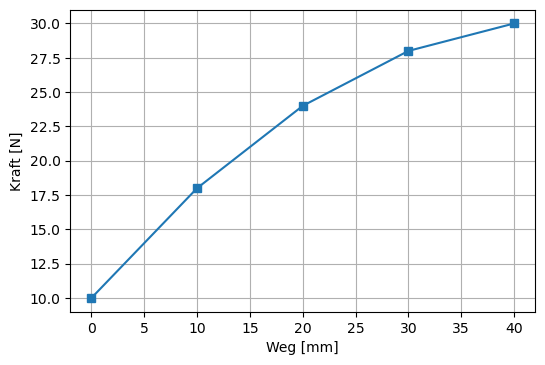
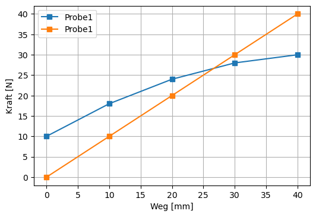
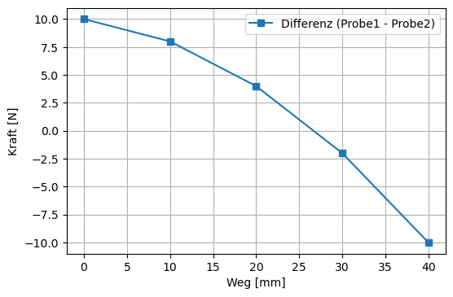

2. Übungen 1¶
Erstellen Sie mit Hilfe der Informationen aus dem Kapitel Grundlagen folgende Grafiken:
Um die Lösung zu bekommen klicken Sie auf click to show
2.1. Ü1: Kraft - Weg (I)¶
🔲 Stellen Sie den Kraft Weg Verlauf dar.

| Weg [mm] | Kraft [N] |
|---|---|
| 0 | 10 |
| 10 | 18 |
| 20 | 24 |
| 30 | 28 |
| 40 | 30 |
Lösung
import matplotlib.pyplot as plt
x = [0,10,20,30,40]
y = [10,18,24,28,30]
plt.plot(x,y,marker="s");
plt.xlabel("Weg [mm]");
plt.ylabel("Kraft [N]");
plt.grid();
plt.savefig('Uebung01.png', bbox_inches='tight', dpi=100)
2.2. Ü2: Kraft - Weg (II)¶
🔲 Plotten Sie nun noch einen zweiten Verlauf dazu und beschriften Sie beide

| Weg [mm] | Kraft (Probe1) [N] | Kraft (Probe2) [N] |
|---|---|---|
| 0 | 10 | 0 |
| 10 | 18 | 10 |
| 20 | 24 | 20 |
| 30 | 28 | 30 |
| 40 | 30 | 40 |
Hinweise
mit
label="Name"können Sie den Linien einen Namen geben und mitplt.legend()diesen anzeigen
Lösung
import matplotlib.pyplot as plt
x = [0,10,20,30,40]
y1 = [10,18,24,28,30]
y2 = [0,10,20,30,40]
plt.plot(x,y1,marker="s",label="Probe1");
plt.plot(x,y2,marker="s",label="Probe1");
plt.legend()
plt.xlabel("Weg [mm]");
plt.ylabel("Kraft [N]");
plt.grid()
plt.savefig('Uebung02.png', bbox_inches='tight', dpi=100)
2.3. Ü3: Kraft - Weg (III)¶
🔲 Stellen Sie nun die Differenz aus beiden Kraftmessungen dar

| Weg [mm] | Kraft (Probe1) [N] | Kraft (Probe2) [N] |
|---|---|---|
| 0 | 10 | 0 |
| 10 | 18 | 10 |
| 20 | 24 | 20 |
| 30 | 28 | 30 |
| 40 | 30 | 40 |
Hinweise
Mit klassischen Python-Listen mit denen wir bisher gearbeitet haben können wir keine Rechenoperationen durchführen wie nachfolgend gezeigt:
y1 = [10,18,24,28,30]
y2 = [0,10,20,30,40]
y1-y2
---------------------------------------------------------------------------
TypeError Traceback (most recent call last)
<ipython-input-50-699341078f78> in <module>
1 y1 = [10,18,24,28,30]
2 y2 = [0,10,20,30,40]
----> 3 y1-y2
TypeError: unsupported operand type(s) for -: 'list' and 'list'
Ein möglicher Weg ist stattdessen ein
numpyArray zu verwenden
import numpy as np
y1 = np.array([10,18,24,28,30])
y2 = np.array([0,10,20,30,40])
y2-y1
array([-10, -8, -4, 2, 10])
Lösung
import numpy as np
import matplotlib.pyplot as plt
x = np.array([0,10,20,30,40])
y1 = np.array([10,18,24,28,30])
y2 = np.array([0,10,20,30,40])
plt.plot(x1,y1-y2,marker="s",label="Differenz (Probe1 - Probe2)");
plt.legend()
plt.xlabel("Weg [mm]");
plt.ylabel("Kraft [N]");
plt.grid()
plt.savefig('Uebung03.png', bbox_inches='tight', dpi=100)